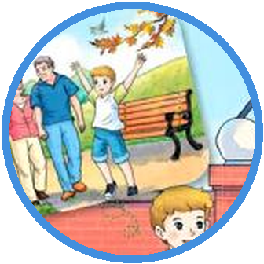
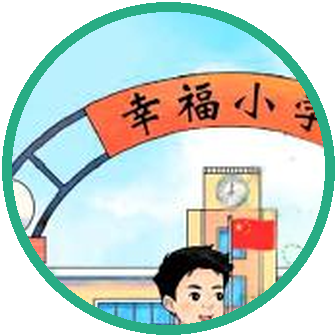
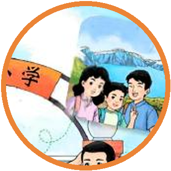

Mike01
Hello, Baobao and Yangyang!
你好，宝宝和阳阳！
意群：Hello / Baobao and Yangyang
本句0.75倍示范后，留 7 秒自己读。
最低目标：听懂 3 句、跟读 3 句、回答 1 个问题。完成即可，不加量。
当前速度：1×（默认）
上方七档按钮可直接调整本页全部视频和逐句音频。
倍速说明：上方七个按钮控制本互动页播放，默认 1 倍。单独 MP4 不能内嵌这些网页按钮；微信分享区另备七个固定速度文件。若孩子必须在微信里打开后再调速，应发送已发布的家庭 H5 学习链接，不能只发送普通 MP4。
MP4 使用 H.264 + AAC，可直接发到微信，在手机、Pad、电脑和常见投屏设备播放。互动页请保持整个文件夹不拆散。
按表达形式和教学目标分流：拼音/中文原名用普通话；完整英语官方名称与教材明确教授的英语表达用清晰美语。不能只因机构位于中国就把英语名称改读成中文。
每条音频依次是：标准英语 → 中文意思 → 0.75倍速英语跟读 → 本句自适应开口时间。系统先测量本句示范音频，再按句长、意群和语言切换计算等待时间；每句实际秒数标在下方。

MikeHello, Baobao and Yangyang!
你好，宝宝和阳阳！
意群：Hello / Baobao and Yangyang
本句0.75倍示范后，留 7 秒自己读。

BaobaoHi, Mike! How was your summer vacation? Where did you go?
嗨，迈克！你的暑假过得怎么样？你去了哪里？
意群：How was your summer vacation? / Where did you go?
本句0.75倍示范后，留 9 秒自己读。
It was good! I went to see my grandparents in Canada. I stayed with them for three weeks. What about you, Baobao?
很不错！我去加拿大看望了爷爷奶奶。我和他们一起住了三个星期。你呢，宝宝？
意群：It was good / went to see my grandparents / stayed with them / for three weeks
本句0.75倍示范后，留 17 秒自己读。
I visited some places in Northeast China with my family. We had a good time there.
我和家人游览了中国东北的一些地方。我们在那里玩得很开心。
意群：visited some places / with my family / had a good time
本句0.75倍示范后，留 13 秒自己读。
Sounds fun. What did you do there?
听起来很好玩。你们在那里做了什么？
意群：Sounds fun / What did you do there?
本句0.75倍示范后，留 7 秒自己读。
We went to a beach in Dalian, walked along Tianchi Lake on Changbai Mountain, and visited Beijicun in Mohe.
我们去了大连的海滩，沿着长白山天池散步，还游览了漠河的北极村。
意群：went to a beach in Dalian / walked along Tianchi Lake / on Changbai Mountain / visited Beijicun in Mohe
本句0.75倍示范后，留 20 秒自己读。

YangyangWow, that's wonderful!
哇，那太棒了！
意群：that's wonderful
本句0.75倍示范后，留 5 秒自己读。
How was your vacation, Yangyang? Where did you go? What did you do there?
阳阳，你的假期过得怎么样？你去了哪里？你在那里做了什么？
意群：How was your vacation? / Where did you go? / What did you do there?
本句0.75倍示范后，留 11 秒自己读。
I stayed in Beijing and had a great time, too. My friends and I joined a sports club. We played ping-pong and went swimming together.
我留在北京，也玩得很开心。我和朋友们参加了一个体育俱乐部。我们一起打乒乓球，还去游泳。
意群：stayed in Beijing / had a great time / joined a sports club / played ping-pong / went swimming together
本句0.75倍示范后，留 19 秒自己读。
Cool! We all enjoyed our summer vacation.
真不错！我们的暑假都过得很开心。
意群：We all enjoyed / our summer vacation
本句0.75倍示范后，留 7 秒自己读。
隐私说明：录音只保存在当前设备浏览器内，不会上传，也不会保存到服务器。点击录音时需要家长允许麦克风。普通网页录音不能可靠判断音素，因此这里不冒充“专业自动评分”；专业逐词/音素评测需另行配置受保护的语音评测服务。
I visited some places in Northeast China.
把三个音节读清楚，词尾 -ed 在 /t/ 后读 /ɪd/。
为什么：原形 visit 末尾是 /t/，加 -ed 后要增加一个 /ɪd/ 音节。
第一步：不听答案，先完整读句子并在本机录音。
We walked along Tianchi Lake.
词尾是清晰的 /kt/，不要读成 /d/，也不要另加音节。
为什么：walk 末尾是清辅音 /k/，所以 -ed 读 /t/。
第一步：不听答案，先完整读句子并在本机录音。
We all enjoyed our summer vacation.
重音在第二个音节，词尾 -ed 读 /d/。
为什么：enjoy 末尾是元音，所以 -ed 读 /d/。
第一步：不听答案，先完整读句子并在本机录音。
他们的暑假过得怎么样？
他们去了哪里？
他们在那里做了什么？
从听辨、线索补全、中文提取英语，到独立复述；每一步都先开口，再核对。
Where did Mike go?
迈克去了哪里？先说地点。
Baobao visited ...
根据句首线索补完整地区。
What did Yangyang do with his friends?
阳阳和朋友们做了什么？用完整英语回答。
Retell one summer vacation story: where and what.
任选一个人物，说出去哪里、做了什么。
采用提取练习与间隔练习原则；具体间隔按学习材料和保持时长调整，不把艾宾浩斯曲线误写成人人相同的固定分钟表。
每课只精学5项：听读音、懂中文、学搭配、放进句子里使用。教材原词与教学补充已经分开标注。
形容词 · 精彩的；令人愉快的
用来形容让人觉得很棒的人、事或经历。
形容词 · 令人兴奋的；让人激动的
常用来形容一件事让人感到兴奋，不用来直接说人的感受。
动词短语 · 去游泳
go 加上运动的 ing 形式，可以表示去做这项活动。过去发生时用 went swimming。
动词短语 · 参观博物馆
visit 后面直接接地点，不加 to；说过去的事情时用 visited。
动词短语 · 在一片海滩上玩
教材写 a beach，谈到双方都知道的那片海滩时，更常说 on the beach。
How was ...? 询问过去怎么样；回答用 It was ...
Where / What + did + 主语 + 动词原形？did 已表示过去，后面的动词用原形。
规则动词常加 -ed；went 和 had 需要单独记忆。
本课正文、问答、角色扮演和教材示范中实际出现的全部过去式。原形和过去式意思对应，但表达的时间和句法位置不同。
| 动词原形 | 过去式 | 中文意思 | 变化类型 |
|---|---|---|---|
| be /bi/ | was was /wʌz/ | 是；处于 | 不规则 |
| do /du/ | did did /dɪd/ | 做 | 不规则 |
| go /ɡoʊ/ | went went /wɛnt/ | 去 | 不规则 |
| stay /steɪ/ | stayed stayed /steɪd/ | 停留；居住 | 规则变化 |
| visit /ˈvɪz.ɪt/ | visited visited /ˈvɪz.ɪ.tɪd/ | 参观；拜访 | 规则变化 |
| have /hæv/ | had had /hæd/ | 有；度过 | 不规则 |
| walk /wɔk/ | walked walked /wɔkt/ | 走；步行 | 规则变化 |
| join /dʒɔɪn/ | joined joined /dʒɔɪnd/ | 加入；参加 | 规则变化 |
| play /pleɪ/ | played played /pleɪd/ | 玩；进行（活动） | 规则变化 |
| enjoy /ɪnˈdʒɔɪ/ | enjoyed enjoyed /ɪnˈdʒɔɪd/ | 享受；喜欢 | 规则变化 |
| see /si/ | saw saw /sɔ/ | 看见；看望 | 不规则 |
did 已经表示过去，所以后面的主要动词回到原形。
在 stay、play、day、way 这一组词里，ay 表示 /eɪ/。
在 good、book、look、foot 这一组词里，oo 表示短元音 /ʊ/。
例外：
在 beach、teach、read、seat 这一组词里，ea 表示元音 /i/。
例外：
听懂三位同学的暑假对话；会说感受、地点和活动；会用一般过去时问答；按拼读规律记单词。
能说出一个关键词就算成功。下一课开始前会再提取一次，不要求今天全部背完。